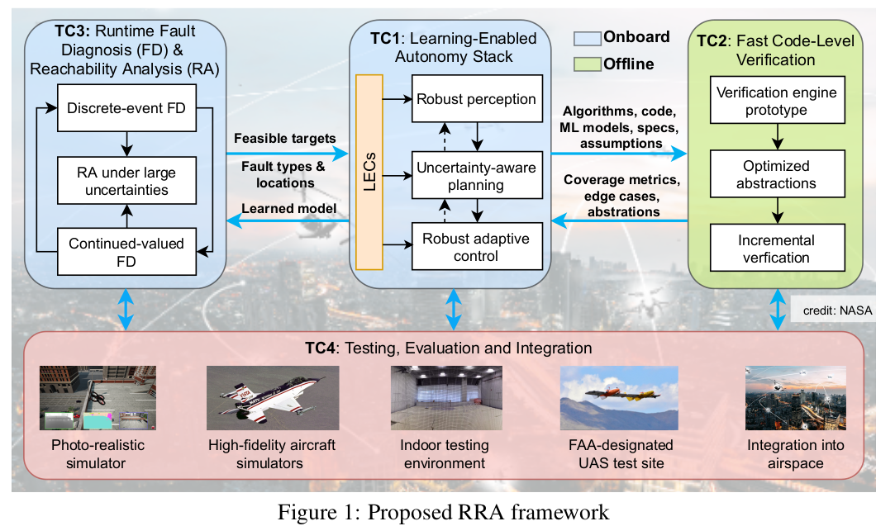

Research Areas
Core Research Expertise
- Stochastic Control Methods for Path Planning
- RL : Discretization of belief space for partially observable Markov decision process.
- MPPI : Monte-Carlo simulation-based Path integral method for approximate solution of finite time horizon optimal control in MPC.
- Complexity : Sampling complexity for the simulation-based optimization for the stochastic control tasks.
- Adversarial Machine Learning for Autonomous Vehicles
- Min-max optimization framework to robustify perception-based control that utilizes high-dimensional sensors, e.g., camera, lidar, and radar.
- Distributed and Robust Control
- Input-output methods for analysis, design and implementation of distributed architectures
- Mean Field control
- Security in feedback control systems
- Decentralized Optimization
- Efficient incorporation of second-order information in multi-agent networks
- A General and flexible framework (gradient, quasi-Newton, Newton) for decentralized optimization.
Relevant Topics and Applications
- Exploration in uncertain environment: Discretization of the belief space is useful to consider the trade-off between exploration and exploitation.
- Sampling based path integral method to consider complex cost function for optimal control of autonomous vehicles in cluttered and dynamic environment.
- On board computer resource allocation for the path integral method based on sampling complexity bounds.
- Validation of machine learning tool embedded in autonomous vehicle software stack.
- Real-time optimization-based control: Information exchange based on proximities; Connected Autonomous vehicles, Drone fleets, Field robot coordination etc.
- Decentralized Machine learning: Distributed data mandates distributed computing (privacy/security); Heterogeneous hardware require flexible computing schemes.
Current Projects
Robust and Resilient Autonomy for Advanced Air Mobility NASA University Leadership Initiative Project
The LAACSL is a member of the NASA Robust and Resilient Autonomy Project along with research groups from the University of Illinois, MIT, Georgia Tech, North Carolina A&T State University and Corporate Partners Lockheed Martin and the Sierra Nevada Corporation
This project aims to develop, integrate and test methods aimed at improving safety of Urban Air Mobility technologies that are expected to become more prominent in the coming years.